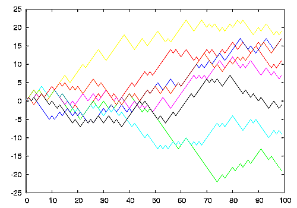

A run chart, also known as a run-sequence plot is a graph that displays observed data in a time sequence. Often, the data displayed represent some aspect of the output or performance of a manufacturing or other business process. It is therefore a form of line chart.
Run charts show individual data points in chronological order.

Run sequence plots are an easy way to graphically summarize a univariate data set. A common assumption of univariate data sets is that they behave like, random drawings, from a fixed distribution with a common location, and with a common scale.
With run sequence plots, shifts in location and scale are typically quite evident. Also, outliers can easily be detected.